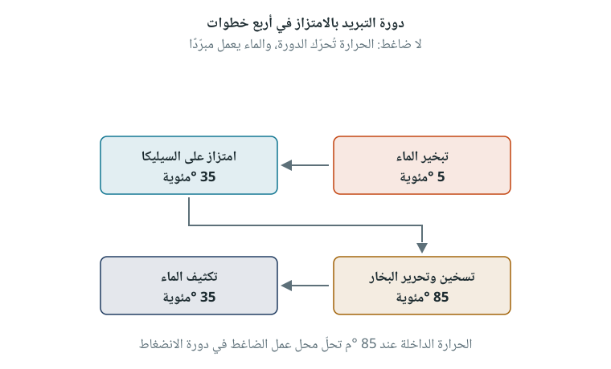
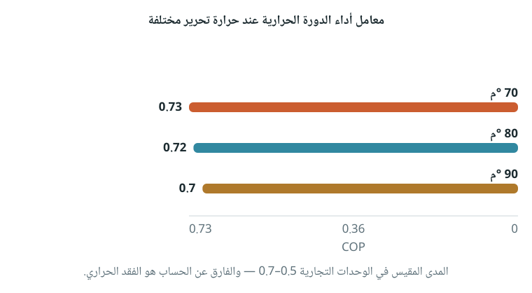

كيف تنتج حرارة 85 درجة برودةً بلا ضاغط؟
غيّر سعة الامتزاز وحرارة التحرير، وتابع معامل الأداء والبرودة المنتجة.
COP = (m·h_fg) / (m·h_ads + C_bed·ΔT)
COP المعروض حدّ أعلى نظري؛ الأداء المقيس في الوحدات الحقيقية أقل منه بنحو 10 إلى 20%.
افتراضات النموذج والمصدر
دورة مثالية بلا فقد حراري
المادة سيليكا جل–ماء بحرارة امتزاز 3200 kJ/kg
تبخّر عند 5 °م وتكثيف عند 35 °م
لا استهلاك كهربائي للمضخات
Latent heat of vaporization of water — Engineering ToolBox
Adsorption cooling — silica gel/water working pair — ScienceDirect Topics
Solar adsorption cooling review — IEA Solar Heating & Cooling Programme
في المبرد الكهربائي يرفع الضاغط ضغط البخار. في المبرد الامتزازي يقوم عازل صلب — السيليكا جل — بالمهمة: يلتقط بخار الماء فيخفض الضغط في المبطّخ، فيتبخّر الماء عند 5 °م ويسحب الحرارة من الماء المُبرَّد.
بعد التشبّع تُسخَّن المادة إلى 85 °م، فيتحرر البخار ويتكاثف خارجًا، وتعود المادة للعمل. كل الطاقة الداخلة حرارة، لا كهرباء إلا لمضخات صغيرة — فيمكن تشغيل الوحدة بحرارة شمسية أو حرارة عادمة من مصنع.
الآلية
كيف يحدث الأمر على مستوى الجسيمات أو المتغيّرات المباشرة
التبخّر يحتاج حرارة كامنة تُؤخذ من الماء المحيط، فينخفض حرارته. إزالة البخار باستمرار تحفظ الضغط منخفضًا فيستمر التبخّر. المادة المازّة تعمل كمضخة بخار كيميائية: تلتقط الجزيئات على سطحها المسامي الضخم، ثم يُطرد الماء بالتسخين لأن الامتزاز ناشر للحرارة.
الأرقام والوحدات
العلاقات والوحدات والنطاقات العددية التي تسند الشرح
الأداء يُقاس أولًّا بقانون الطاقة: COP = Q_التبخير ÷ Q_الدخل، حيث Q_التبخير = m·2489 kJ/kg عند 5 °م، وQ_الدخل = m·3200 + حرارة تسخين السرير. بسعة امتزاز 0.15 كجم ماء لكل كجم مادة وحرارة تحرير 85 °م يكون COP نحو 0.60؛ والقيم المقيسة في الوحدات التجارية 0.5–0.7.
الفرق الدقيق
المفهوم الملتبس الذي يُخلَط به، وأين ينفصلان
يُخلط بين الامتزاز (adsorption، على سطح صلب) والامتصاص (absorption، داخل سائل كبروميد الليثيوم). ويُخلط بين COP الحراري وCOP الكهربائي: هذا يقيس البرودة المنتجة لكل وحدة حرارة، وذاك لكل وحدة كهرباء — ولا يُقارنان مباشرة بلا تحويل بكفاءة توليد الكهرباء.
حدود التعريف
أين ينكسر التعريف أو النموذج وما الذي لا يفسّره
COP الحراري المنخفض (0.6) يعني حاجة إلى مصدر حرارة وفير ورخيص، وإلا صار غير اقتصادي. ويعتمد الأداء على حرارة التبريد المتاحة: كل ارتفاع في حرارة التكثيف يخفض السعة. وتتدهور المادة بالشوائب والغبار بعد دورات كثيرة.


| الكمية | القيمة | المصدر |
|---|---|---|
| حرارة التبخّر عند 5 °م | 2489 kJ/kg | [1] |
| حرارة الامتزاز العكسية على السيليكا جل | 3200 kJ/kg | [2] |
| المدى المقيس لمعامل الأداء الحراري | 0.5–0.7 | [3] |
المصادر
- 1 Latent heat of vaporization of water — Engineering ToolBox. www.engineeringtoolbox.com/water-vapor-saturation-pressure-d_599.html · اطُّلع عليه 2026-11-16
- 2 Adsorption cooling — silica gel/water working pair — ScienceDirect Topics. www.sciencedirect.com/topics/engineering/adsorption-chiller · اطُّلع عليه 2026-11-16
- 3 Solar adsorption cooling review — IEA Solar Heating & Cooling Programme. www.iea-shc.org/ · اطُّلع عليه 2026-11-16
راجعه: مراجعة آلية — بوابة الديوان (فحص بنيوي وأرقام) 2026-11-16 · 2026-11-16 · آخر تحديث 2026-11-16